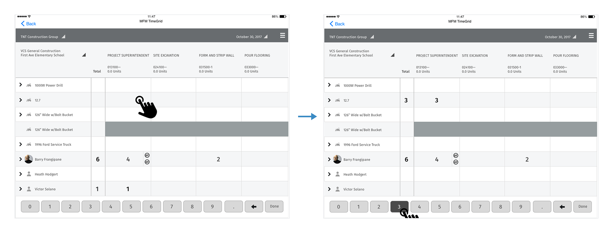
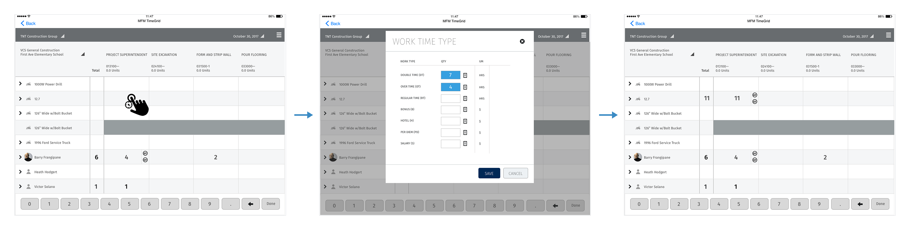
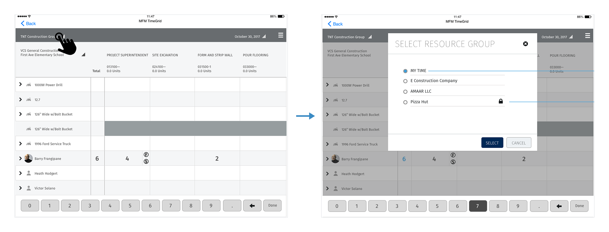
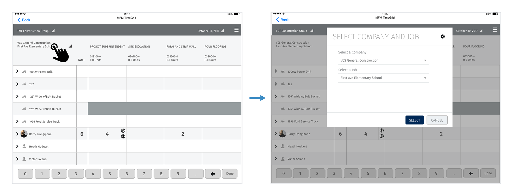
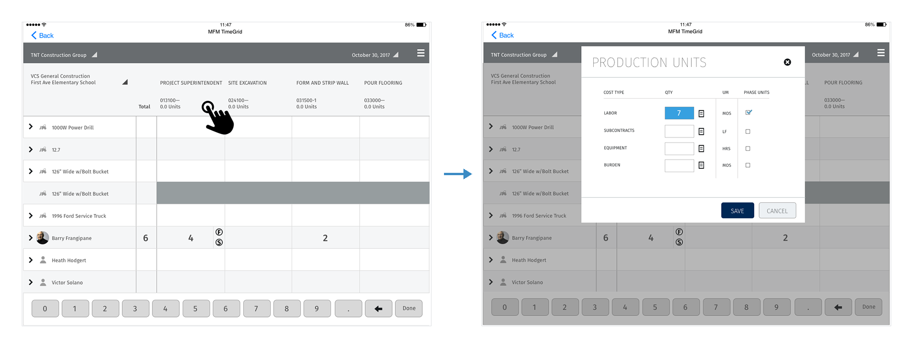
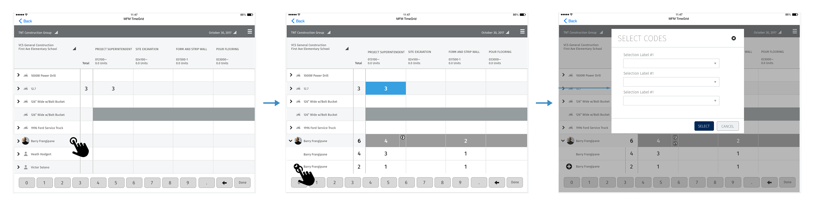
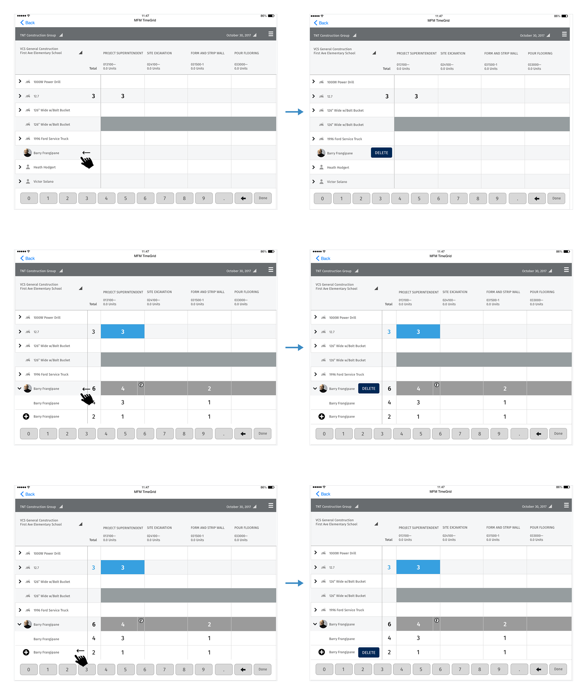

Viewpoint · 2016
Mobile Field Manager — Time Entry
At the end of a shift, a foreman has to log hours for every worker and machine on the crew, against the right job and cost codes. Viewpoint's Mobile Field Manager already had a time grid on the iPad, but it was slow to read and hard to correct. I redesigned the grid and how people interact with it, so a crew's day can be entered with taps, and every correction happens in the same view.
Client
Viewpoint
Timeline
2016
Role
Senior UX Designer
Team
Product manager, iOS engineers, Vista domain experts
Product area
Mobile Field Manager (MFM) · Field time entry
Platform
iPad · Native iOS
Focus
Mobile · Enterprise · Interaction design
Impact
One grid for daily time, with no separate forms and no saving step

In one line
Mobile Field Manager (MFM) is the iPad app Viewpoint's construction customers use in the field, and it sends time and quantities back to Vista, Viewpoint's ERP. I redesigned the TimeGrid, the screen where a foreman records a crew's day. The redesign had three parts: a grid that stays readable as you scroll, a set of gestures that each do one thing, and a visual spec that engineering could build from without guessing.
Context and the problem
On a construction job, hours are cost. Each hour a worker or machine spends is charged to a job and a phase (site excavation, forming walls, pouring floors), and that's how a contractor finds out whether a job is making or losing money. The foreman or superintendent is the one who records it, usually at the end of a long day, standing in a trailer or a truck.
MFM put that record on an iPad as a grid. Resources (people and equipment) run down the side, and the job's phases and cost codes run across the top. It worked, but it had grown one feature at a time:
- Hard to read at a glance. Labels sat far from the columns, rows had no banding, and the total for each resource sat apart from the resource's name.
- Easy to lose your place. Crews are long and jobs have many phases. When the grid scrolled, it was easy to lose track of which row and column you were in.
- Detail lived elsewhere. Overtime, per diem, production quantities and extra cost codes each needed their own path, away from the grid.
The constraints:
- Vista's data model. Companies, jobs, phases, cost types and resource groups all came from Vista. The design could change how they're shown, but not what they are.
- An existing native app. The grid was already built and in customers' hands. Changes had to fit inside it and ship without retraining everyone.
- Field conditions. People use it outside, often with gloves on, in bright light, with a weak connection and not much patience.
My role and what I owned
I was the UX designer on the TimeGrid enhancements, from the interaction model to the visual spec handed to engineering.
- I owned the gesture model, the interaction flows (entry, work time types, selection, deletion, production units, multiple entries), the visual redesign and style guide, and the onboarding and help concepts.
- Product management owned priorities and scope, including which items moved to a later release (the style guide marks team integration as later).
- Engineering owned the iOS build and the sync with Vista, and worked through the gesture specs with me.
The figures are my original specification boards, cropped so each one shows a single flow. Names, companies and jobs in them are placeholder data.
Goals, and how we'd know
We agreed on what success looked like before changing the screens:
- Faster daily entry. A foreman can log a typical crew's day in fewer taps and less time than before.
- Fewer entry errors. Fewer hours land on the wrong row or phase, and fewer entries have to be fixed in the office after sync.
- Details without leaving the grid. Overtime, per diem, quantities and extra codes can all be added from the grid itself.
- Learnable in the field. A new foreman can find the long press and the swipe without training.
What we learned in research
I reviewed the existing app with Viewpoint's field and Vista experts and walked through how foremen actually record a day: who they enter first, what they check, and what they come back to fix. Three findings changed the design.
1. People get lost in the grid, not in the data
Foremen know their crew and their phases. What went wrong was position. After a scroll, they typed hours into the wrong row or phase. So the grid's anchors became fixed: resource names and totals stay put when you scroll sideways, and phase headers stay put when you scroll down (Decision 1).
2. Most entries are simple; a few are detailed
Most cells hold a single number: hours on a phase. Only some need a split between regular and overtime, a per diem or a production quantity. Putting every option in front of every entry would have slowed the common case. So the gestures split the work: a tap enters the number, and a long press opens the detail (Decision 2).
3. The app has to teach itself
Foremen change jobs and companies, and a long press can't be seen until someone tells you it's there. So onboarding became part of the design, with help in context instead of a manual (Decision 4).
Strategy and the decisions that mattered
Decision 1: Make the grid hold still where it matters
Before touching the visuals, I specified how the grid moves. When you scroll sideways, the phase headers move with the grid and the front columns (resource name and total) stay fixed. When you scroll down, the headers stay fixed. All the data loads when the grid opens, so scrolling never stops to load more. That uses more memory up front, but it makes scrolling predictable on a weak job-site connection.
![Specification board titled MFM Time Grid, Gestures, with four rows of before-and-after iPad wireframes. Grid horizontal scroll: the header labels scroll with the grid and the main column stays fixed. Grid vertical scroll: the header labels stay fixed, and there is no loading because all data is loaded at first. Single tap, time entry: tapping a cell loads a number keyboard at the bottom, and the user does not need to press enter for the entry to persist. Long press, time entry modal details: a long press on a cell loads a details panel](../assets/img/case/mobile-field-manager/gestures.png)
Decision 2: Tap to enter, long press for detail
A tap selects a cell, and the number pad at the bottom enters the value. It saves right away, with no Enter or Save step. A long press on the same cell opens a Work Time Type panel for splitting the hours: double time, overtime and regular time in hours, and bonus, hotel, per diem and salary in dollars. Back on the grid, the cell shows the total, with small DT and OT badges so you can see at a glance that it's split.


Decision 3: Change context from the grid's own labels
One proposal was to put company, job and resource group in a settings screen, which kept the grid clean. I argued that foremen switch these several times a day, and a settings screen would hide what the grid was showing. Instead, the labels at the top of the grid are the controls. Tap the resource group to change it, and tap the company and job to change those. The grid always says what it's showing, and changing it takes one tap.
Two small rules came out of the resource-group picker. On the first visit it defaults to My Time, and after that it opens on the last group you used. Groups you can't access still appear, with a lock, so a foreman can see they exist instead of wondering where they went.


Decision 4: Put the rest in the grid, too
Every other task followed the same rule: start it from the thing you want to change.
- Production units. Tap a phase's header to record quantities by cost type (labor, subcontracts, equipment, burden), each with its unit of measure.
- Multiple entries per person. Expand a worker's row to see their separate entries, and add one with +. It asks for its codes, then appears in the grid as its own row.
- Delete. Swipe a row left to delete it, the way iOS does everywhere else. Swiping a parent row deletes it and its children. Swiping a child row deletes only that row.



Design process and solution
A visual pass that makes the grid easier to scan
With the interactions settled, I redesigned the grid's visuals, and every change had a reason written next to it. Zebra rows keep your eye on the row. Phase labels sit closer to their columns in all caps. Blocked cells are a lighter grey, so they look unavailable instead of looking like an error. Totals moved into the fixed front column at 24pt, so each row's total stays next to its name. The number pad is always on screen, because nearly every visit to the grid ends with typing a number.
![Style guide board. The existing grid on a yellow panel and the improved grid on a green panel, with callouts: make controls lighter for better contrast, color D8D8D8; move labels closer to the grid, Fira Sans Regular 16pt all caps; zebra bars, color F5F6F7; grayed out blocked areas, color 969D9F; use the caret icon; crop the picture in a 33 by 33 pixel circle; move the total time into the front fixed column, Fira Sans Medium 24pt, color 2E3133; number keyboard always visible; number font Fira Sans Light 20pt. Below, a modal spec: title bar 77px, H1 Fira Sans Thin 34pt, action bar 65px, grey overlay 4A4A4A at 40 percent, 1px stroke, scroll for extra content, a call-to-action button with 5px corners, 40px high, color 002856 VCS Blue, and a regular button in EDF1F4 VCS Aluminium](../assets/img/case/mobile-field-manager/style-guide.png)
One modal pattern for every detail
Work time types, production units, codes, resource group and company and job all use the same modal: a thin title, a scrollable body, a 65px action bar, and a VCS Blue primary button next to a quieter Cancel. The grid stays visible under a 40% grey overlay, so you don't lose your place. Engineering built it once and reused it for every panel.
Validation and iteration
I walked the flows through with Viewpoint's field experts and customers, using the boards and clickable prototypes of the main scenarios. They included entering a crew's day, splitting overtime, fixing a mistake and switching jobs. The biggest change came from the gestures.
We thought gestures would be obvious. They weren't, so we taught them in the app.
We thought that long press and swipe, being standard iOS gestures, would be found on their own. We learned that people who spend all day on a job site don't try long-pressing a spreadsheet cell, and nothing on screen tells you it's there. The most useful part of the redesign was the easiest to miss. So we added onboarding and help to the grid. Tooltips point at each control the first time. A short MFM Introduction walks through the gestures one at a time, for example to add time and edit details to a resource, just long press inside a cell. A help menu in the title bar links to a video demo and to the full help site.
![Onboarding and help board with four iPad screens. Top left: the grid with four tooltips reading quick explanatory text about this feature, and a help menu listing In-Page Help, Video Demo and Help. Top right: an MFM Introduction carousel over the dimmed grid, showing a hand long-pressing a cell and the text to add time and edit details to a resource, just long press inside a cell, with eight progress dots and Previous, Next and Cancel buttons. Bottom left: a video demo playing over the grid. Bottom right: a direct link to MFM Help opening in the browser](../assets/img/case/mobile-field-manager/onboarding.png)
Outcome and impact
The enhancements were specified as a set that engineering could ship in stages inside the existing app, with team integration planned for a later release. The source material has no numbers, so the outcome is described by what changed for the foreman:
- One screen for the day. Hours, overtime, per diem, production quantities, extra codes and deletions all start from the grid. Nothing requires leaving it.
- Less to remember. Fixed anchors keep row and phase in view, totals sit next to names, and entries save without a separate step.
- A spec engineering could build from. Every gesture, state and visual change was written down with its rule, and one modal pattern covered every detail panel.
A time grid in the field isn't a spreadsheet you look at. It's one you type into at the end of a long day, so every tap you don't need is a tap that isn't made in the wrong row.
What I'd do differently
- Measure the baseline first. Our goals were about speed and errors, but we didn't record how long a day's entry took or how many entries were corrected after sync. With those numbers, the outcome above could be a result instead of a description.
- Test on site, not in the office. Glare, gloves and a truck cab change what counts as a good tap target. I'd run at least one round in the field, in the conditions the app is used in.
- Design how to find a gesture along with the gesture. Onboarding came after we saw people miss the long press. Now I plan how people will find a hidden gesture at the same time I design it, with a hint on the cell itself as well as a tutorial.
The broader lesson: in a dense enterprise tool, speed comes from taking steps away more than adding features. The biggest improvements here were a column that stays put and a Save step that isn't there.